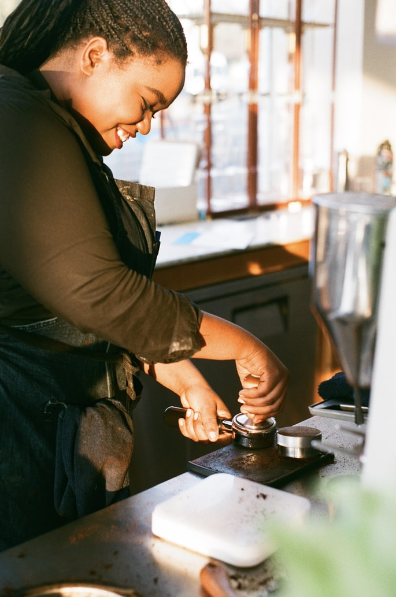
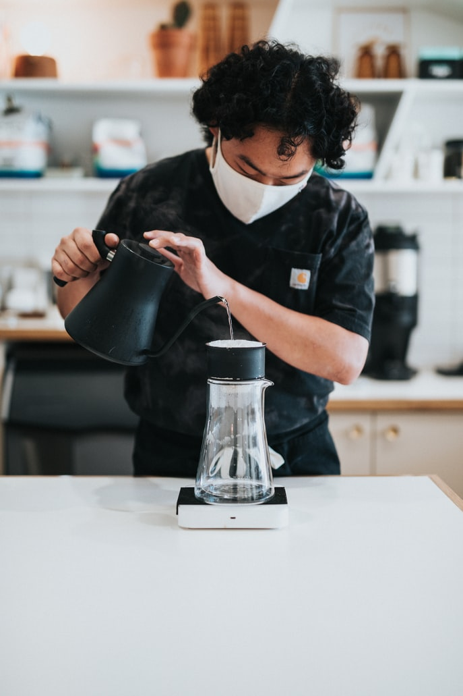
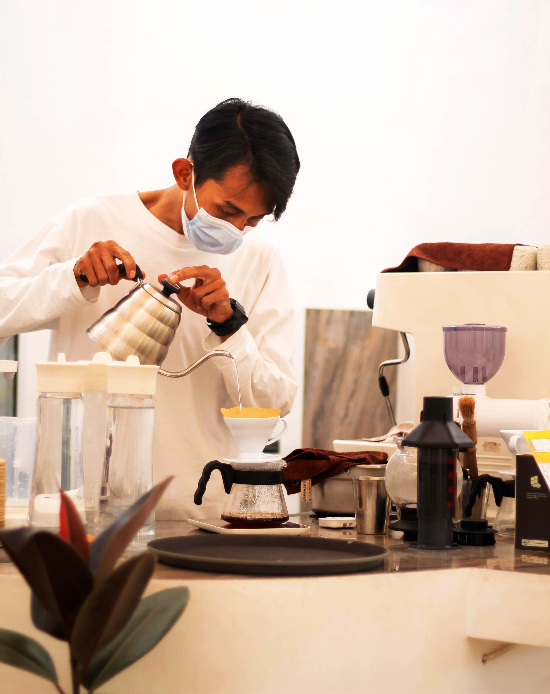

Hope Robinson, our coffee barista, is responsible for all our espresso and coffee based drinks. She joined the King's Street family two years ago and we're so happy to have her! Her favorite part about working at King's Street is witnessing when old friends reunite at our shop over pastries and coffee. Ask her to make you her go-to King's Street order, the cortado. Hope loves reading and writing poetry, exploring new restaurants, and yoga.

Joey Chua, our non-coffee barista, makes all of our teas, non-coffee drinks, and speciality beverages. He's been with the King's Street family since the beginning! His favorite part about working at King's Street is getting music recommendations from customers and adding the songs to King's Street's Spotify playlist! His go-to King's street order is the matcha latte. In his free time, he enjoys gaming, walking his dog, and visiting his sister in Chicago.

Gary Kim is the general manger and founder of King's Street. His childhood dream had always been to start a coffee shop in the city where he was born and raised. After working in (five!) different coffee shops in New York, he was finally able to open King's Street in 2016. In his free time, he hangs out with his wife, Anabelle, and their daughter, Gracie.

If you're interested in joining our team, please contact us by dropping in for a form at our location.